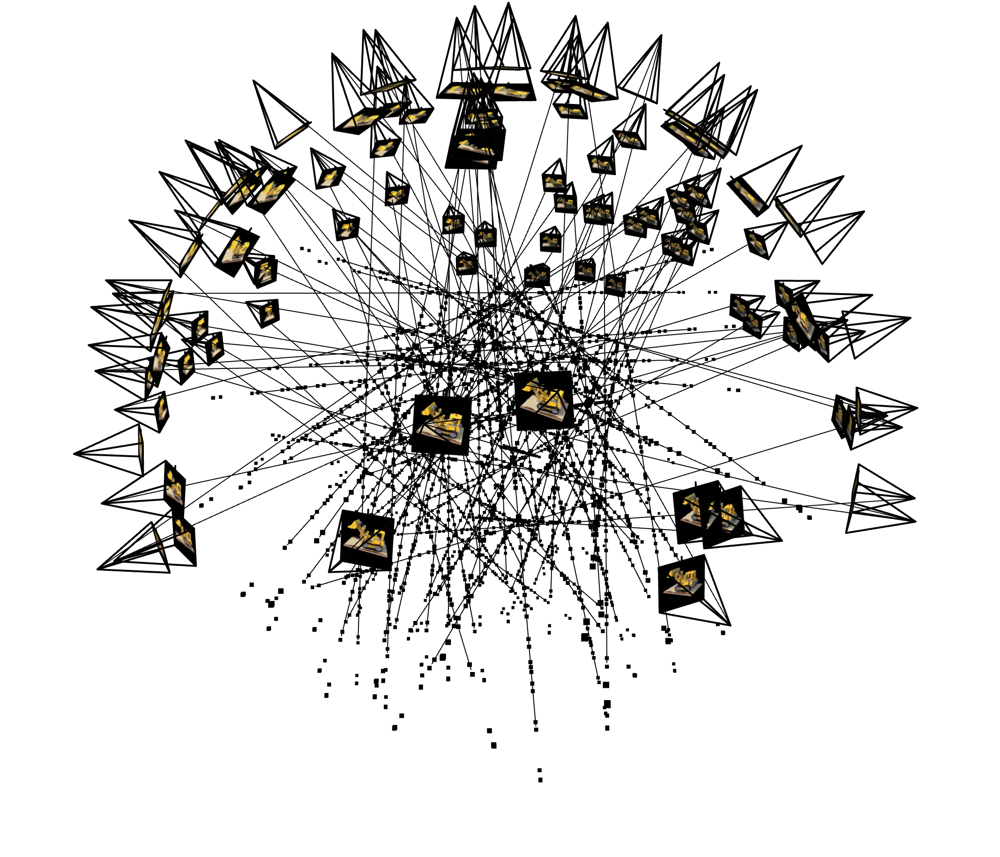
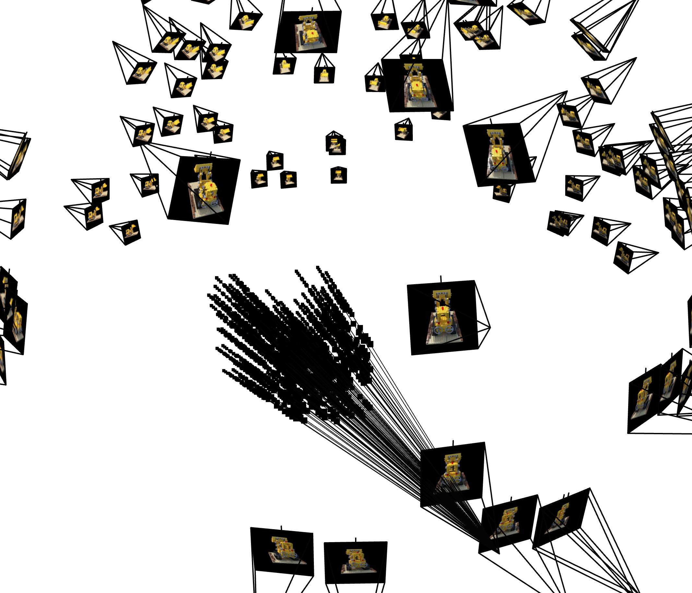
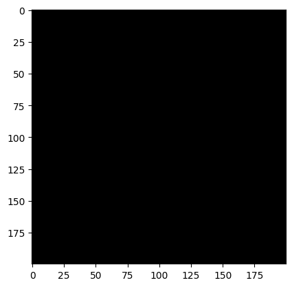
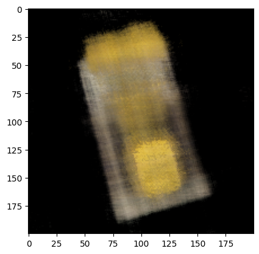
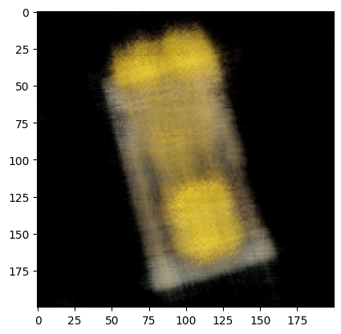
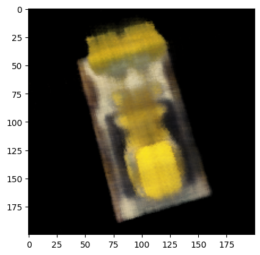
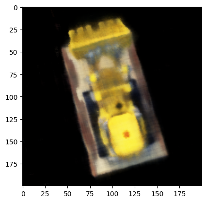
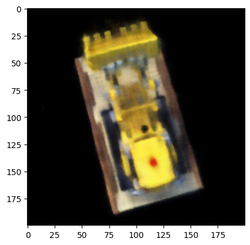
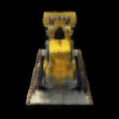

For sampling, I used the approach of using a global sampling to get N rays from all the images. I do this in my dataloader. My dataloader will take in either the train or validation images and respective C2W and during initialization will calculate all the rays and uvs.
Below is the visualization of sampling where the cameras, rays, samples can be visualized. The dots are the samples along the ray.  Below is the visualization of sampling different rays from 1 image. Below is an image of the architecture of the NERF model.

This model was made deeper and has more inputs (ray direction).
As the network was trained to fit the training images, below is the progression of how the model fit the images across iterations. I have run the model for 5000 iterations with a batch size of 1000 rays using Adam optimizer with a learning rate of 5e-3. The model reached a training Peak Noise to Signal Ratio (PNSR) of 23.
     Below is a gif of the novel views using just the test camera extrinsics. Click on the video to play it again.
